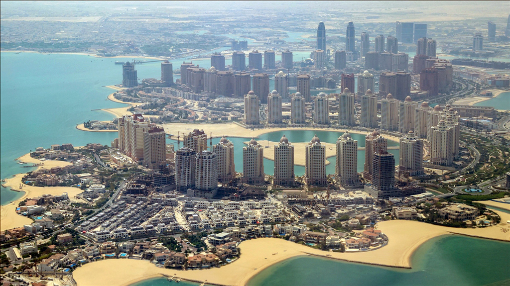
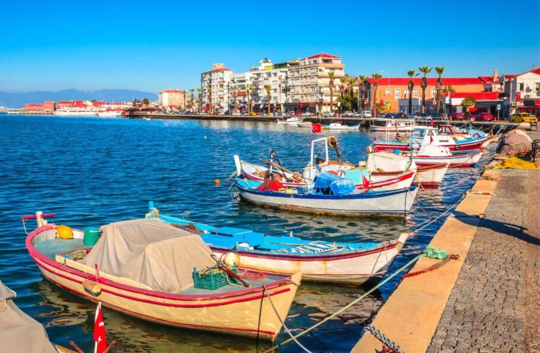
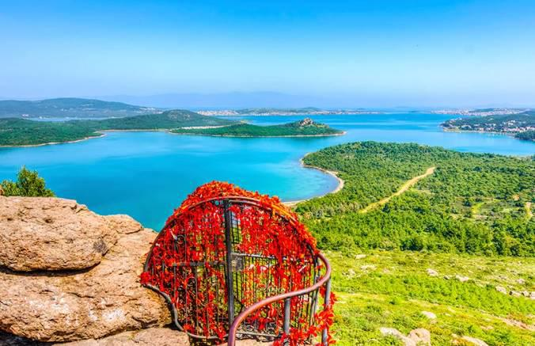

Beni Daha İyi Tanıyın!
Ben, yeni yerler keşfetmeyi, farklı kültürleri tanımayı ve bu deneyimlerimi paylaşmayı seven bir bilgisayar mühendisliği öğrencisiyim. 8 Ekim 2003'te doğdum.
Gezdiğim Yerler
Katar
Katar, Arap Yarımadasının doğusunda bir Basra Körfezi ülkesidir.
Doha, Qatar’ın (Katar) başkenti ve en büyük şehri. Ülkenin doğusundaki Basra Körfezi kıyısında yer alıyor. Ülke nüfusunun % 40’ı Doha şehir merkezi ve banliyölerinde yaşıyor. Şehir aynı zamanda ülkenin ekonomik merkezi ve Katar’ın 7 belediyesinden biri. Orta Doğu’da bir geçiş noktası olmaktan çok daha fazlasını hak eden Doha’nın büyük bir ticaret ve alışveriş merkezine dönüştürülüp Dubai ile yarışır bir şehir olması planlanıyor. Burası çölün ortasında dantel gibi işlenen sanat eseri gökdelenleri, Maldivler’e alternatif Banana Adası, çöl safarisi ve misafirperver insanıyla misafirlerini hemen etkisi altına alıyor. Doha bir de tasarım dalında UNESCO yaratıcı şehirler ağına kabul edilmesiyle adını duyuruyor. Doha’ya yolum daha önce birkaç kez düştü. Ama ziyaretim Doha Hamad Uluslararası Havalimanı’ndan öteye geçmedi. Buraya kadar gelip ülkeyi görememekse içimde bir ukde olarak kaldı. Şimdiyse 2 uçuşum arasında Doha’da 23 saatlik aktarmam vardı. Bu da bana şehri kısa da olsa tanıma fırsatı verdi.
Ayvalık
Ayvalık, güzel plajları ve tarihi dokusuyla harika bir tatil beldesidir.
Serin, kumlu ve sığ denizi, nefis yemekleri ve ona eşlik eden onlarca farklı mezesi, sıcak ama yakmayan havası, her bir köşesinin güzelliği ile Ayvalık, gündüzü ayrı gecesi ayrı güzel yerlerden. Eğer şehirden sıkılıp birkaç günlük kaçamak yapmak istiyorsanız ya da yaz tatiliniz için sakin bir yer arıyorsanız Ayvalık’ı mutlaka değerlendirmeye alın. Hem deniz kenarında hem yıllara meydan okuyan sokaklarında hem de oturduğunuz her Ayvalık sofrasında hayatın ne kadar güzel olduğunu göreceksiniz.
Cunda Adası
Cunda, şirin sokakları ve lezzetli deniz ürünleriyle ünlü bir adadır.
Ege’deki tatil yerleri arasında bir seçim yapmaya çalışırken Cunda mı, Bozcaada mı, Bodrum mu, Alaçatı mı diye düşürken bu yazımıza denk geldiyseniz size koca bir HOOOP! çekiyoruz. Estafurullah efendim, hepsi bir kefeye konur mu hiç? Evet, hepsi Egeli, ama hepsi birbirinden de bir o kadar farklı ki… Avarel ve Joe gibi aynı aileden gelen bambaşka karakterler. Bodrum şöyle, Bozcaada böyle diye tek tek anlatmak isterdik ama malumunuz bu yazımızın as solisti Cunda Adası. Cunda’yı en iyi ifade eden şey de bizce aheste bir keyif yeri. Girit mutfağı, Rum mirası sokaklar, özerk ada hissiyatı, hoş insanlar, edilen muhabbetler, gün batımında sofra sefası ile ince ve dingin yaşamayı sevenlere hitap ediyor. Tabi ki bu söylediklerimiz buraların tadını en güzel çıkaracağınız zamanlar olan sezon başı ve sezon sonu için geçerli. Bayram gibi zamanlarda sizi mutsuz eder. Önerimiz bayram gibi yoğun zamanlarda tercih etmemeniz yönünde. Tatiliniz uyuyor ise yaz yerine okulların açık olduğu zamanları tercih edebilirsiniz.
Eskişehir

Eskişehir, modern kafe ve restoranlarıyla ünlü, tarihi dokusunu koruyan bir şehirdir.
Eskişehir, yabancıların deyimiyle Türkiye’nin en underrated yani daha fazlasını hak eden şehirleri arasında başı çekiyor. Bir öğrenci kenti olan Eskişehir, gerek tarihi gerek doğası gerekse de yaşam standartlarıyla kesinlikle gezip görülmeye değer. Peki, biz neden Eskişehir’in hak ettiği değeri bulamadığını düşünüyoruz? Çünkü şehrin işlevsel bir sivil havalimanı yok. Eskişehir’in tek havalimanı olan Hasan Polatkan, Hava Kuvvetleri Komutanlığı tarafından kullanılan bir tesis. Umuyoruz ki şehir yakın zamanda hak ettiği havalimanına kavuşacak ve Türkiye’nin önde gelen turizm noktalarından birine dönüşecek. Eskişehir gezi rehberinde, bir gezginin bu sakin ve genç nüfuslu şehri tanımak için neler yapması gerektiğinden bahsedeceğiz. Eskişehir’de gezip görülecek yerleri anlatıp şehrin en iyi restoranlarına ve gece hayatına değineceğiz.
Gezilerimden Kareler
Katar'dan bir kare
Ayvalık'ın eşsiz manzarası
Cunda Adası'nda gün batımı
Eskişehir'in modern yüzü